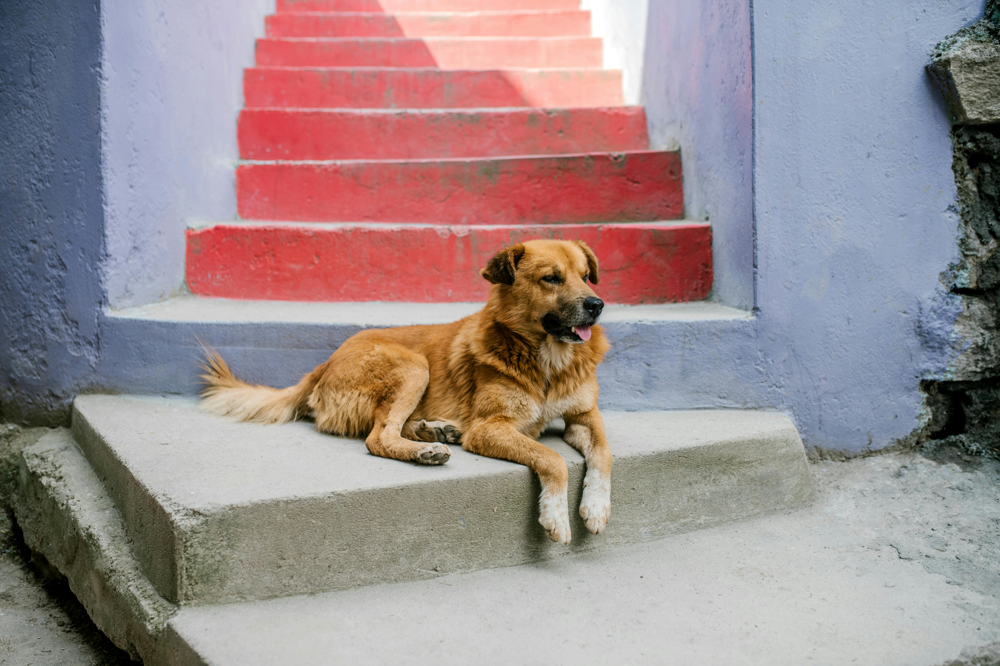

Hi I'm Sheru, I love sleeping.

Hi I'm Reshmi, and I'm a very good girl!

Hi I'm Bhalu, I love getting pats and treats.

Our community project is circled around providing safety equipment and health gear for stray dogs to ensure that they stay secure at night, comfortable in the winters and over all healthy. We aim to reduce the risk of late night accidents involving dogs in our community and overall want the dogs in our community to be healthier and safer by making customised anti-accident accessories for strays by ourself. By donating to us, you are helping us help hundreds of innocent strays and helping us reach our goal.
In our community project, we are dedicated to ensuring the safety and health of stray dogs. By providing them with necessary safety equipment and health gear, we aim to keep them secure during the night, comfortable during the harsh winters, and overall healthier. Our initiative focuses on reducing the risk of late-night accidents involving these innocent animals by creating customized anti-accident accessories tailored specifically for strays.
Your donation plays a crucial role in our efforts. Each contribution helps us provide more strays with the protection they desperately need. By supporting us, you're not just giving money—you're actively participating in making a significant difference in the lives of hundreds of stray dogs, helping us move closer to our goal of a safer and healthier community for them.
Donate today by scanning the QR code below and be a hero for the strays. Together, we can make a lasting impact.